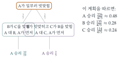

STEP II 1995, 문제 12
계속 읽기 전에 문제를 먼저 읽어 보자. 문제는 STEP Support Programme의 문제 데이터베이스에 있다: step.maths.org/questions/95-s2-q12
도입
세 사람이 빵을 던지며 결투(duel)를 벌인다. 커스버트는 절대 빗맞히지 않고, 버티는 다섯 번에 세 번 맞히며, 가장 서툰 앨저넌은 다섯 번에 두 번밖에 맞히지 못한다. 앨저넌이 먼저 던진다. 그는 누구를 겨냥해야 할까? 놀랍게도 답은 “아무도 겨냥하지 않는다”이다. 그는 일부러 빵을 엉뚱한 곳으로 던져야 한다.
이유는 전략에 있다. 세 사람이 모두 남아 있는 동안에는 위험한 두 사수인 버티와 커스버트가 서로를 겨냥한다. 앨저넌이 둘 중 하나를 쓰러뜨리면 살아남은 쪽이 그를 노리게 된다. 일부러 빗맞히면 두 사람이 먼저 승부를 가리게 두고, 살아남은 사람에게 첫 번째로 던질 기회를 얻는다. 실제로 최선의 계획을 따르면 가장 서툰 사수가 승리할 가능성이 가장 높아진다. 이 “삼자 결투(truel)”는 약점이 어떻게 강점이 될 수 있는지 보여 주는, 게임 이론(game theory)에서 즐겨 쓰는 예이다.
시작하기 전에
두 사람의 결투에서 퍼시가 먼저 던진다. 그가 곧바로 맞히거나, 아니면 둘 다 빗맞혀서 상황이 처음과 똑같이 되풀이된다. 퍼시가 이길 확률(probability)에 대한 방정식을 세워 보아라.
퍼시가 이길 확률을 \(P\)라 하자. 그는 확률 \(p\)로 곧바로 맞힌다. 그렇지 않으면(확률 \(1 - p\)) 로드니가 던지는데, 로드니가 확률 \(1 - r\)로 빗맞히면 처음 상황으로 돌아간다. 따라서 \(P = p + (1 - p)(1 - r)P\)이다.
차근차근 풀기
단계 1 두 사람의 결투
이를 풀면 \(P\bigl(1 - (1 - p)(1 - r)\bigr) = p\)이고, \(1 - (1 - p)(1 - r) = p + r - pr\)이므로 \[P = \frac{p}{p + r - pr}. \qed\] 앨저넌(\(p = \frac25\))과 버티(\(r = \frac35\))가 결투하고 앨저넌이 먼저 던지면 이 값은 \(\frac{2/5}{2/5 + 3/5 - 6/25} = \frac{10}{19}\)이다. 버티가 먼저 던지면 앨저넌이 이길 확률은 \(\bigl(1 - \frac35\bigr)\cdot\frac{10}{19} = \frac{4}{19}\)이다.
단계 2 앨저넌의 세 가지 선택
각 경우에 누가 남고, 다음에 누가 던지는가?
앨저넌이 커스버트를 맞힌다. 다음에는 버티가 앨저넌을 향해 던진다. 앨저넌은 버티가 먼저 던지는 결투에서 이겨야 하므로 확률은 \(\frac{4}{19}\)이다.
앨저넌이 버티를 맞힌다. 다음에는 커스버트가 앨저넌을 향해 던지는데, 커스버트는 절대 빗맞히지 않는다. 앨저넌의 승리 확률은 \(0\)이다.
앨저넌이 빗맞힌다. 버티가 커스버트를 향해 던진다. 확률 \(\frac35\)로 버티가 맞히면 앨저넌과 버티가 남고 앨저넌이 던질 차례이므로, 앨저넌은 확률 \(\frac{10}{19}\)로 이긴다. 확률 \(\frac25\)로 버티가 빗맞히면 커스버트가 버티를 맞히고, 앨저넌은 단 한 번의 던지기로 커스버트와 맞선다. 그는 맞혀야만 이기므로 확률은 \(\frac25\)이다. 이를 모두 합하면 \[\tfrac35\cdot\tfrac{10}{19} + \tfrac25\cdot\tfrac25 = \tfrac{6}{19} + \tfrac{4}{25} = \tfrac{150 + 76}{475} = \tfrac{226}{475} \approx 0.476.\]
단계 3 조언
앨저넌이 커스버트를 겨냥하면 맞힐 수도 있고(확률 \(\frac25\)) 빗맞힐 수도 있다. 그의 전체 승리 확률은 얼마인가? 일부러 빗맞히는 경우와 비교해 보아라.
커스버트를 겨냥하면 승리 확률은 \(\frac25\cdot\frac{4}{19} + \frac35\cdot\frac{226}{475} = \frac{200 + 678}{2375} = \frac{878}{2375} \approx 0.370\)이다. 버티를 겨냥하는 것은 이보다도 나쁘다. 일부러 빗맞히면 \(\frac{226}{475} \approx 0.476\)으로 가장 좋다. 따라서 앨저넌은 엉뚱한 곳으로 던져야 하고, 그러면 그가 이길 확률은 \(\frac{226}{475}\)이다.■

돌아보기
되풀이되는 상황은 방정식을 낳는다. 결투는 두 번 빗맞힌 뒤 “다시 시작”되므로, 승리 확률에 대한 일차방정식(linear equation)을 얻는다.
상대의 대응을 생각하라. 앨저넌의 선택 하나하나가 버티와 커스버트가 다음에 할 행동을 바꾼다.
아무것도 하지 않는 것까지 포함해 모든 선택을 비교하라. 가장 나빠 보이던 수가 최선의 수였다.
숨은 수학
전략과 게임 이론
삼자 결투는 게임 이론의 핵심 아이디어를 보여 준다. 최선의 행동은 다른 참가자들이 어떻게 대응할지에 달려 있다는 것이다. 가장 위험한 상대인 커스버트를 맞히는 것이 뻔한 수이지만, 그 수는 앨저넌에게 불리한 방향으로 게임을 바꾼다. 이 문제에서는 버티와 커스버트의 전략(strategy)이 고정되어 있다(두 사람은 서로를 겨냥한다). 완전한 게임 이론적 분석에서는 각 참가자가 다른 참가자들도 똑같이 한다는 것을 알면서 자신의 전략을 스스로 고른다. 1944년 폰 노이만(John von Neumann)과 Oskar Morgenstern의 연구, 1950년 내시(John Nash)의 연구에서 시작된 이러한 분석은 오늘날 경제학, 진화생물학, 정치학의 토대를 이루고 있다.
약점이 되는 강점
삼자 결투에서 누가 이길까? 앨저넌이 최선의 계획을 따르면 승리 확률은 앨저넌이 \(\frac{226}{475}\), 버티가 \(\frac{135}{475}\), 커스버트가 \(\frac{114}{475}\)이다. 가장 뛰어난 사수가 살아남을 가능성이 가장 낮은데, 선택권이 있는 사람은 모두 그를 겨냥하기 때문이다. 같은 양상은 후보가 여럿인 선거, 기업 간 경쟁, 그리고 가장 강한 경쟁자가 첫 번째 표적이 될 수 있는 자연에서도 나타난다. 1950년대에 삼자 결투를 게임 이론에 도입한 Martin Shubik은 이를 이용해 가장 적합한 자가 반드시 살아남는가 하는 질문을 던졌다.
사고 기술
행동을 고르기 전에, 그 행동이 다른 모든 사람의 상황을 어떻게 바꾸는지, 그리고 그들이 어떻게 대응할지 따져 보아라.
대학에서는 이것이 게임 이론의 역진 귀납법(backward induction)이 된다. 먼저 게임의 끝을 분석한 다음, 거꾸로 거슬러 올라가며 최선의 첫 수를 정하는 것이다.
더 도전하기
버티와 커스버트. 앨저넌이 일부러 빗맞힐 때, 버티가 이길 확률은 \(\frac{135}{475}\)이고 커스버트가 이길 확률은 \(\frac{114}{475}\)임을 확인하여라.
더 나은 사수. 앨저넌이 \(\frac25\) 대신 확률 \(a\)로 맞힌다면, \(a\)가 어떤 값일 때 일부러 빗맞히는 것이 여전히 그의 최선의 첫 수인가?
버티는 커스버트를 겨냥해야 할까? 앨저넌이 일부러 빗맞힌다고 할 때, 버티는 앨저넌보다 커스버트를 겨냥하는 것이 유리한가? (커스버트의 행동은 바뀌지 않는다고 가정한다.)
던지는 횟수가 정해진 결투. 각 참가자가 두 번씩만 던질 수 있는 결투에서 퍼시가 이길 확률을 구하고, 횟수 제한이 없는 결투와 비교하여라.
더 읽을거리
D. Marc Kilgour & Steven Brams, “The truel”, Mathematics Magazine 70 (1997). 삼자 결투를 쉽게 개관한 글이다.
Avinash Dixit & Barry Nalebuff, Thinking Strategically (Norton). 일반 독자를 위한 게임 이론 책으로, 삼자 결투도 다룬다.
Ken Binmore, Game Theory: A Very Short Introduction (Oxford University Press). 게임 이론 입문서이다.